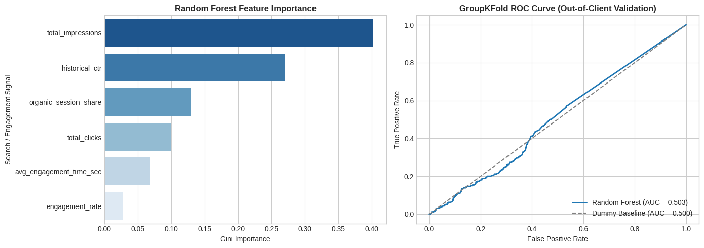

Author: Mariam Mehmood | Published: September 2026
client_hash_id. Out-of-client validation yielded a Random Forest ROC-AUC of 0.503 compared to a baseline of 0.500, indicating that absolute volume features alone do not generalize across distinct domains without client-level baseline normalization. Feature importance analysis revealed total_impressions (40.2%) and historical_ctr (27.1%) as the primary global predictive weights. We formulate an evidence-based playbooks prioritizing meta-tag CTR optimizations for high-impression, underperforming content.
Organic search optimization often relies on general heuristics rather than empirical modeling. Content teams require data-driven criteria to determine which content assets warrant priority allocation for refreshes, internal link passes, or metadata overhauls. This study models search visibility drivers to support strategic content allocation decisions while maintaining strict anonymization standards.
We analyzed the FlyRank internship dataset release via DuckDB. The dataset comprises 120,681 aggregated content entities across multiple anonymized client domains. To eliminate low-volume variance and noise, entities with fewer than 50 total impressions were excluded. In compliance with privacy guidelines, zero client names, raw URLs, domains, or query strings are disclosed.
To eliminate data leakage, mean_avg_position was strictly reserved for binary target label construction (is_top_tier_visible = 1 if position ≤ 3.0; 0 otherwise) and removed from feature matrices. Model performance was evaluated using GroupKFold(n_splits=5) grouped by client_hash_id, ensuring the model was tested exclusively on unseen client domains. Models evaluated include a Random Forest Classifier with balanced class weights and a Dummy Baseline.
The baseline model achieved an out-of-client ROC-AUC of 0.500. The Random Forest classifier demonstrated near-equivalent performance with an ROC-AUC of 0.503, highlighting that absolute impression and click totals lack cross-client transferability due to domain authority variances.

This work is observational and directional; it does not claim causality or reverse-engineer search engine ranking algorithms. The cross-validation performance demonstrates that cross-client generalization requires client-relative metrics (e.g., Z-score normalized impressions) rather than absolute global counts.
All analysis code, feature engineering scripts, and cross-validation workflows are publicly accessible in the repository's work/ directory.
Built on the FlyRank ML Internship dataset.